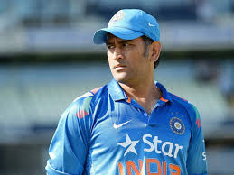
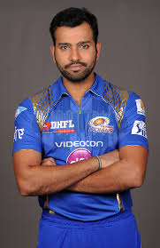
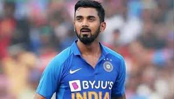
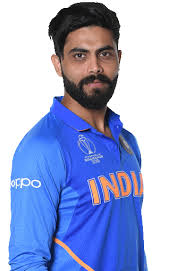
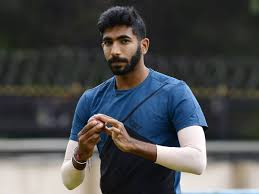
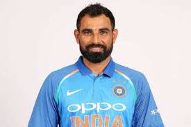
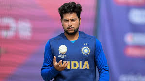
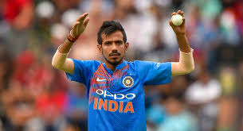
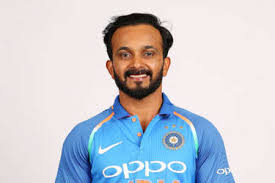
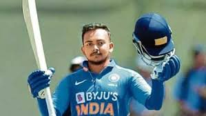

The India men's national cricket team, also known as Team India and Men in Blue, is governed by the Board of Control for Cricket in India (BCCI), and is a Full Member of the International Cricket Council (ICC) with Test, One-Day International (ODI) and Twenty20 International (T20I) status. As of 1 May 2020, India is ranked third in Tests, second in ODIs and third in T20Is by the ICC. Virat Kohli is the current captain of the team across all formats, while the head coach is Ravi Shastri.
 |
 |  |
Virat Kohli31Batsman |
MS Dhoni38Wicket-Keeper |
Rohit Sharma32Batsman |
|  |  |  |
K.L. Rahul27Wicket-Keeper |
Ravindra Jadeja31Bowler |
Hardik Pandya26All-Rounder |
|  |  |  |
Jasprit Bumrah26Bowler |
Mohammed Shami29Bowler |
Kuldeep Yadav25Bowler |
|  |  |  |
Yuzvendra Chahal29Bowler |
Kedar Jadhav34Batsman |
Prithvi Shaw20Batsman |